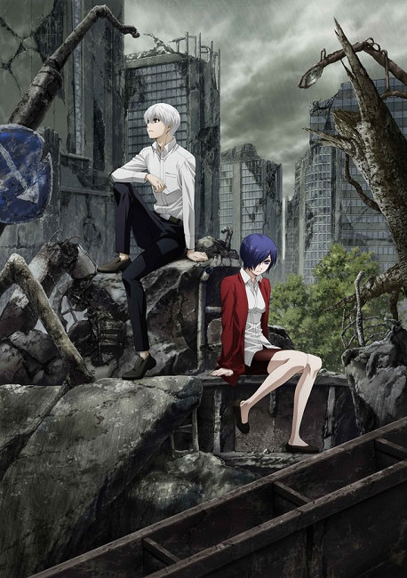

漫畫家「石田翠」所創作的奇幻漫畫《東京喰種》描繪潛伏在人類社會裡的食人怪物，以及因此造成的人性黑暗，細膩的敘述吸引了許多粉絲，這股龐大的人氣也促使本作改編為動畫、舞台劇、真人版電影。

本作的續篇《東京喰種：re》自2014年啟動以來也已經發行15冊以上的單行本，終於在6月14日發行的週刊少年JUMP上宣布「還有3話就要完結」的情報，提醒漫迷們千萬別錯過最後的劇情。同時官方也在雜誌上揭露《東京喰種：re》動畫2期會在10月份放送的消息，並釋出視覺圖。
動畫2期視覺圖

《東京喰種：re》延續前作的故事，混在人群當中，吞食人類的血肉，儘管擁有人類的外觀，卻是與人類相異的存在“喰種”。負責驅逐研究喰種的〔CCG〕為了完成某個目標而新設立一個實驗體集團，其名稱是「Qs昆克斯」。非「一般人類」的他們，與佐佐木琲世一等搜查官，他們在東京這座城市要面對的到底是什麼？